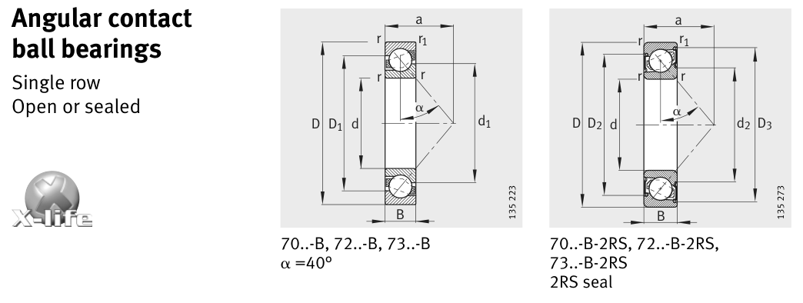

Original catalogue drawing - FAG Schaeffler HR 1, page 240

Scanned from the manufacturer catalogue page listing this part number. All part numbers printed on that table share the same drawing.
Scale cross-section
Blue = inner / outer ring, yellow = rolling element. Drawn to scale from this part's own
dimensions for selection reference only - not a manufacturing or assembly drawing.
Dimension table (mm / inch)
Symbol
Dimension
mm
inch
d
Bore diameter
15
0.5906
D
Outside diameter
35
1.378
B
Inner-ring / bearing width
11
0.4331
r
Chamfer (min)
0.6
0.0236
Notes
Weights are given in kg. Load ratings are shown in both the original catalogue units and the converted value (1 N = 0.2248 lbf). Data is provided for selection reference only - confirm against the latest official catalogue before ordering.
Main dimensions
Bore d (mm)
15
Outside dia. D (mm)
35
Width B (mm)
11
Inner-ring OD d1 (mm)
22.5
Inner-ring shoulder dia. D1 (mm)
27.6
Load ratings & speeds
Basic dynamic load rating Cr (lbs)
1798
Basic static load rating Cor (lbs)
1000
Basic dynamic load rating Cr (N)
8000
Basic static load rating C0r (N)
4450
Fatigue limit load Cur (N)
300
Limiting speed nG (rpm)
24,000
Reference speed nB (rpm)
19,200
Effective load centre a (mm)
16
Weight
Weight (kg)
0.044
Mounting dimensions (fillets / shoulders)
Housing fillet r max (mm)
0.6
Chamfer r1 min (mm)
0.3
Shaft shoulder da (mm)
19.2
Housing shoulder Da (mm)
30.8
Housing shoulder Db (mm)
32.6
Housing fillet ra max (mm)
0.6
Housing fillet ra1 max (mm)
0.3
Bearing life (ISO 281 basic rating life)
C / P
Equivalent load P (N)
L10 (106 rev)
L10h at 3,000 rpm
4
2,000
64
356
6
1,333
216
1,200
8
1,000
512
2,844
10
800
1,000
5,556
15
533
3,375
18,750
Basic rating life per ISO 281: L10 = (C/P)3 with C = 8,000 N. Hours = L10 x 106 / (60n). Life-modification factors for lubrication, contamination and temperature (aISO) are not included.
Source & traceability
Brand
FAG
Source catalogue
FAG / Schaeffler Rolling Bearings HR 1
Catalogue page
p.240 (dimensions)
Load ratings in newtons, fatigue limit load Cur, limiting speed nG and reference speed nB.
Send us the quantity you need and we will come back with price and
lead time, normally within 24 hours. Equivalent parts from other brands can be quoted at the same time.